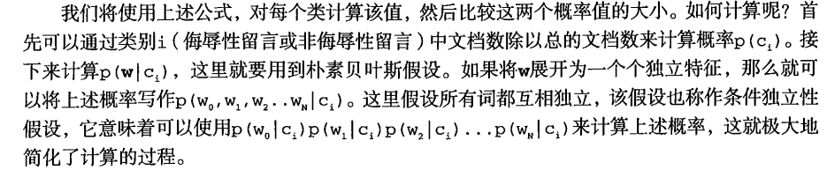
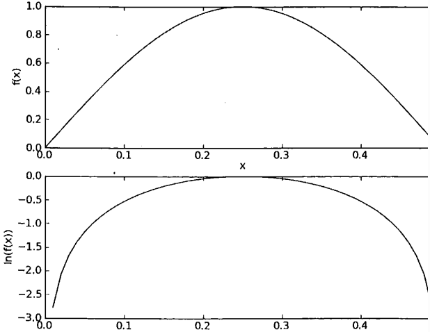

大家好，还是那句老话，这篇博客将简单通俗地介绍一个用于数据分类的Python代码。机器学习，无非就是六个步骤，
收集数据：可以使用任何方法。本章使用RSS源。
准备数据：需要数值型或者布尔型数据。
分析数据：有大量特征时，绘制特征作用不大，此时使用直方图效果更好
训练算法：计算不同的独立特征的条件概率。
测试算法：计算错误率。
使用算法：文档分类。可以在任意场景中使用朴素贝叶斯分类器，不一定非要文本。
仅标称数据
这里我们会举两个例子来说明，一个是判断是否为消极评论，一个是垃圾邮件的分类
#词表到向量的转换函数
from numpy import *
def loadDataSet():
postingList=[['my', 'dog', 'has', 'flea', 'problems', 'help', 'please'],
['maybe', 'not', 'take', 'him', 'to', 'dog', 'park', 'stupid'],
['my', 'dalmation', 'is', 'so', 'cute', 'I', 'love', 'him'],
['stop', 'posting', 'stupid', 'worthless', 'garbage'],
['mr', 'licks', 'ate', 'my', 'steak', 'how', 'to', 'stop', 'him'],
['quit', 'buying', 'worthless', 'dog', 'food', 'stupid']]
classVec = [0,1,0,1,0,1] #1 is abusive, 0 not
return postingList,classVec
postingList有六句话，classVec对于是否消极，“1”为消极
我们可以看到，一些词语还是挺明显的，比如“stupid”，“garbage”等等
从图可以看到，我们要计算特征数列为w时，c0情况的概率（正常）和c1情况的概率（粗鲁）， 用到贝叶斯公式，我们只要分别计算p(ci)和p(w|ci)就可以了，因为我们只需要比较两个概率的大小 分母都一样就不需要计算了，前者概率计算简单，根据classVec占比就行了，后者需要计算在两种不同的情况中 每个词出现的概率，然后与待测样本各向量分别相乘再求乘积，以下是书本上的解释。
接下来我们一个一个函数去认识
def createVocabList(dataSet):
vocabSet = set([])
for document in dataSet:
vocabSet = vocabSet | set(document)
return list(vocabSet)
第一个函数就是生成涵盖所有词语的“字典”，这个“|”是取并集的意思
def setOfWords2Vec(vocabList, inputSet):
returnVec = [0]*len(vocabList)
for word in inputSet:
if word in vocabList:
returnVec[vocabList.index(word)] = 1
else: print("the word: %s is not in my Vocabulary!"%word)
return returnVec
这个函数是把我们的“字典”中每个字当作一个特征向量，输入一个单词集 ，他就会对比，有特征向量就是“1”，没有为“0”，计算完毕返回一个向量列表或者说是向量集合
from numpy import *
def trainNB0(trainMatrix, trainCategory):#输入文档单词向量矩阵（查完字典的）和文档类别
numTrainDocs = len(trainMatrix)
numWords = len(trainMatrix[0])
pAbusive = sum(trainCategory)/float(numTrainDocs) #计算侮辱性文档的概率 p(1)
p0Num = zeros(numWords)
p1Num = zeros(numWords)
p0Denom = 0.0
p1Denom = 0.0
for i in range(numTrainDocs):
if trainCategory[i] == 1:
p1Num += trainMatrix[i]
p1Denom += sum(trainMatrix[i])
else:
p0Num += trainMatrix[i]
p0Denom += sum(trainMatrix[i])
p1Vect = p1Num/p1Denom
p0Vect = p0Num/p0Denom
return p0Vect, p1Vect, pAbusive
这个函数是最关键的，参数输入是特征向量列表的集合（训练集），对应类别（答案）。 过程就是得到各特征向量列表的集合，将他们按照类别1和0分别计算，比如说类别1，我把类别1的都挑出来， 把他们的特征向量矩阵分别求和（矩阵的求和），再把该矩阵除以他们的总数，得到概率矩阵，这个概率 矩阵就是类别1的向量分布模型了。同理算0的。 输出p0vect为0类型的向量分布模型或是说概率矩阵，p1vect是1类型的，pAbusive是1类型的评论数目除以（1类型+2类型）
有了这几个公式我们就可以直接开算了
from numpy import *
listOPosts, listClasses = loadDataSet()
myVocabList = createVocabList(listOPosts)
trainMat = []
for postinDoc in listOPosts:
trainMat.append(setOfWords2Vec(myVocabList, postinDoc))
p0V, p1V, pAb = trainNB0(trainMat, listClasses)
p0V, p1V, pAb
output:
(array([0.04166667, 0.08333333, 0.04166667, 0. , 0. ,
0.04166667, 0.04166667, 0. , 0.04166667, 0.04166667,
0.04166667, 0.04166667, 0.04166667, 0.125 , 0.04166667,
0.04166667, 0.04166667, 0. , 0.04166667, 0. ,
0. , 0. , 0.04166667, 0.04166667, 0.04166667,
0. , 0. , 0. , 0.04166667, 0. ,
0.04166667, 0.04166667]),
array([0. , 0.05263158, 0. , 0.05263158, 0.05263158,
0.05263158, 0. , 0.05263158, 0. , 0. ,
0. , 0. , 0. , 0. , 0. ,
0. , 0. , 0.05263158, 0. , 0.05263158,
0.05263158, 0.05263158, 0. , 0. , 0. ,
0.15789474, 0.05263158, 0.05263158, 0.05263158, 0.10526316,
0. , 0.10526316]),
0.5)
p1V[myVocabList.index("stupid")]
output: 0.15789473684210525
p1V[myVocabList.index("stupid")]
output: 0.15789473684210525
那么我们会想，上面的方法，我们没有计算同一个单词的多少，10000个“stupid”也是当做1个“stupid”来计算， 为了解决这个问题，我们修改上面的setOfWords2Vec函数中的returnVec[vocabList.index(word)] = 1， 把“=”改为“+=”就可以了。 我们又会思考，会不会遇到这一种情况，当我们用待测样品的特征向量与模型相乘时，模型如果中含有0，那么他们连乘最终结果就是0 ，这样就错误了。所以我们要保证模型不能含有0。还有，因为概率都是0.几，可能很小，那么连乘后，会导致这个数超级小， 最后四舍五入变成0，这就造成了数据的下溢。我们有两个破解的办法。第一，初始值每个都设为1，避免零。第二，概率取log(也就是ln)，因为log 函数的图像，顶点平缓，两边陡峭，这完美符合我们的特征模型的逻辑（下图）。而且概率相乘直接变成相加。
具体修改如下：
def bagOfWords2Vec(vocabList, inputSet):
returnVec = [0]*len(vocabList)
for word in inputSet:
if word in vocabList:
returnVec[vocabList.index(word)] += 1#相当于加权
else: print("the word: %s is not in my Vocabulary!")%word
return returnVec
def trainNB1(trainMatrix, trainCategory):#输入文档单词向量矩阵（查完字典的）和文档类别
numTrainDocs = len(trainMatrix)
numWords = len(trainMatrix[0])
pAbusive = sum(trainCategory)/float(numTrainDocs) #计算侮辱性文档的概率 p(1)
# p0Num = zeros(numWords)
# p1Num = zeros(numWords)
# p0Denom = 0.0
# p1Denom = 0.0
p0Num = ones(numWords)
p1Num = ones(numWords)
p0Denom = 2.0
p1Denom = 2.0
for i in range(numTrainDocs):
if trainCategory[i] == 1:
p1Num += trainMatrix[i]
p1Denom += sum(trainMatrix[i])
else:
p0Num += trainMatrix[i]
p0Denom += sum(trainMatrix[i])
p1Vect = log(p1Num/p1Denom) #防止下溢出
p0Vect = log(p0Num/p0Denom)
return p0Vect, p1Vect, pAbusive
output:
(array([-2.56494936, -3.25809654, -3.25809654, -2.56494936, -2.56494936,
-3.25809654, -3.25809654, -3.25809654, -2.56494936, -2.56494936,
-3.25809654, -3.25809654, -1.87180218, -2.56494936, -3.25809654,
-3.25809654, -3.25809654, -2.56494936, -2.56494936, -2.56494936,
-2.56494936, -2.15948425, -2.56494936, -2.56494936, -2.56494936,
-3.25809654, -2.56494936, -2.56494936, -2.56494936, -2.56494936,
-2.56494936, -2.56494936]),
array([-3.04452244, -1.94591015, -2.35137526, -3.04452244, -1.94591015,
-1.65822808, -2.35137526, -2.35137526, -3.04452244, -3.04452244,
-2.35137526, -2.35137526, -3.04452244, -3.04452244, -2.35137526,
-2.35137526, -2.35137526, -3.04452244, -3.04452244, -3.04452244,
-3.04452244, -2.35137526, -3.04452244, -3.04452244, -3.04452244,
-2.35137526, -2.35137526, -3.04452244, -3.04452244, -3.04452244,
-2.35137526, -3.04452244]),
0.5)
p1V.max() == p1V[myVocabList.index("stupid")] == -1.6582280766035324
接下来开始用待测样品套模型了，写一个函数，这个函数功能是分别用待测样品套1和0模型，看谁概率大。 为了方便大家对比学习，我把公式写出来： p(ci / w) = [p(w|ci)*p(ci)]/p(w)
def classifyNB(vec2Classify, p0Vec, p1Vec, pClass1):
#计算[p(w|c1)*p(c1)]
p1 = sum(vec2Classify * p1Vec) + log(pClass1) #因为取对数所以相加即可
#计算[p(w|c2)*p(c2)]
p0 = sum(vec2Classify * p0Vec) + log((1.0 - pClass1))
if p1 > p0:
return 1
else:
return 0
写个函数测试一下
def testingNB():
listOPosts, listClasses = loadDataSet()
myVocabList = createVocabList(listOPosts)
trainMat = []
for postinDoc in listOPosts:
trainMat.append(setOfWords2Vec(myVocabList, postinDoc))
p0V, p1V, pAb = trainNB1(array(trainMat), array(listClasses))
testEntry = ['love', 'my', 'dalmation']
thisDoc = array(setOfWords2Vec(myVocabList, testEntry))
print(testEntry,"classified as: ", classifyNB(thisDoc, p0V, p1V, pAb))
testEntry = ["stupid", 'garbage']
thisDoc = array(setOfWords2Vec(myVocabList, testEntry))
print(testEntry,"classified as: ", classifyNB(thisDoc, p0V, p1V, pAb))
testingNB()
output :
['love', 'my', 'dalmation'] classified as: 0
['stupid', 'garbage'] classified as: 1
#完全合理！
def storeTree(inputTree, filename):
import pickle
fw = open(filename, "wb")
pickle.dump(inputTree,fw)
fw.close()
def grabTree(filename):
import pickle
fr = open(filename,'rb')
return pickle.load(fr)
# open函数不加b会导致->TypeError:must be str, not bytes
# 原因为：Python3给open函数添加了名为encoding的新参数，而这个新参数的默认值却是‘utf-8’。
#这样在文件句柄上进行read和write操作时，系统就要求开发者必须传入包含Unicode字符的实例，
#而不接受包含二进制数据的bytes实例。
#解决方法：使用二进制写入模式（‘wb’）来开启待操作文件，而不能像原来那样，采用字符写入模式（‘w’）
我们来到第二个例子，分类垃圾邮件。
首先我们要构建email的单词提取函数
def ExtractWords(emailDoc):
import re
regEx = re.compile(r'\b\w+\b')
listOfTokens = regEx.findall(emailDoc)
return [tok.lower() for tok in listOfTokens if len(tok) > 2]
这个讲解一下正则，一般加r，这样不用转义，\b是划分单词的界限，\w+连在一起算一个单词，然后单词字母要大于2 ，这样先过滤一些py，c等等一些没用的单词，同一大小写，这里我们不研究句首单词。
接下来，我们对取正常邮件和垃圾邮件，读取好文本，标注好类别，测试一下我们的算法
def spamTest():
docList = []
classList = []
# fullText = []
for i in range(1, 26):
wordList = ExtractWords(open('email/spam/%d.txt' % i).read())
docList.append(wordList)
# fullText.extend(wordList)
classList.append(1)
wordList = ExtractWords(open('email/ham/%d.txt' % i).read())
docList.append(wordList)
# fullText.extend(wordList)
classList.append(0)
vocabList = createVocabList(docList)
trainingSet = list(range(50))
testSet = []
for i in range(10):
randIndex = int(random.uniform(0, len(trainingSet)))
testSet.append(trainingSet[randIndex])
del(trainingSet[randIndex])
trainMat = []
trainClasses = []
for docIndex in trainingSet:
trainMat.append(bagOfWords2Vec(vocabList, docList[docIndex]))
trainClasses.append(classList[docIndex])
p0V, p1V, pSpam = trainNB1(array(trainMat), array(trainClasses))
errorCount = 0
for docIndex in testSet:
wordVector = bagOfWords2Vec(vocabList, docList[docIndex])
if classifyNB(array(wordVector), p0V, p1V, pSpam) != classList[docIndex]:
errorCount += 1
print("the error rate is : ",float(errorCount/len(testSet)))
这个随机十个做测试，然后得到错误率，我们也可以多运行几次取平均值，如下：
def spamTest():
docList = []
classList = []
# fullText = []
for i in range(1, 26):
wordList = ExtractWords(open('email/spam/%d.txt' % i).read())
docList.append(wordList)
# fullText.extend(wordList)
classList.append(1)
wordList = ExtractWords(open('email/ham/%d.txt' % i).read())
docList.append(wordList)
# fullText.extend(wordList)
classList.append(0)
vocabList = createVocabList(docList)
errorCount = 0
totalTest = 0
rate = 0
for j in range(1000):
trainingSet = list(range(50))
testSet = []
for i in range(10):
randIndex = int(random.uniform(0, len(trainingSet)))
testSet.append(trainingSet[randIndex])
del(trainingSet[randIndex])
trainMat = []
trainClasses = []
for docIndex in trainingSet:
trainMat.append(bagOfWords2Vec(vocabList, docList[docIndex]))
trainClasses.append(classList[docIndex])
p0V, p1V, pSpam = trainNB1(array(trainMat), array(trainClasses))
for docIndex in testSet:
totalTest += 1
wordVector = bagOfWords2Vec(vocabList, docList[docIndex])
if classifyNB(array(wordVector), p0V, p1V, pSpam) != classList[docIndex]:
errorCount += 1
rate += float(errorCount/totalTest)
rate /= 1000.0
print( "the error rate is : ",rate)
spamTest()
output:
the error rate is : 0.06466840875516502
第二次:
the error rate is : 0.06678917468611888
我们可以用RSS获取数据，因为我没有vpn，用不了icmp上的代理，所以以后在搞吧。
import feedparser
ny = feedparser.parse('http://newyork.craigslist.org/stp/index.rss')